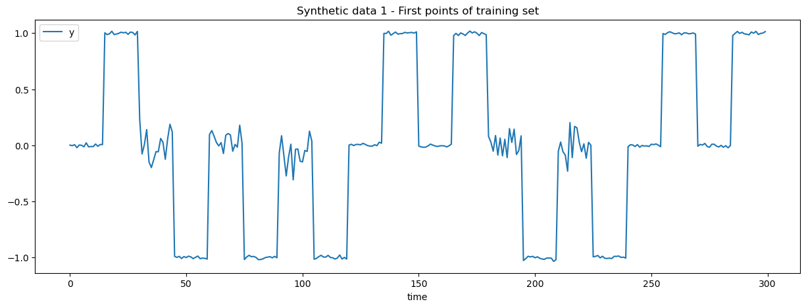
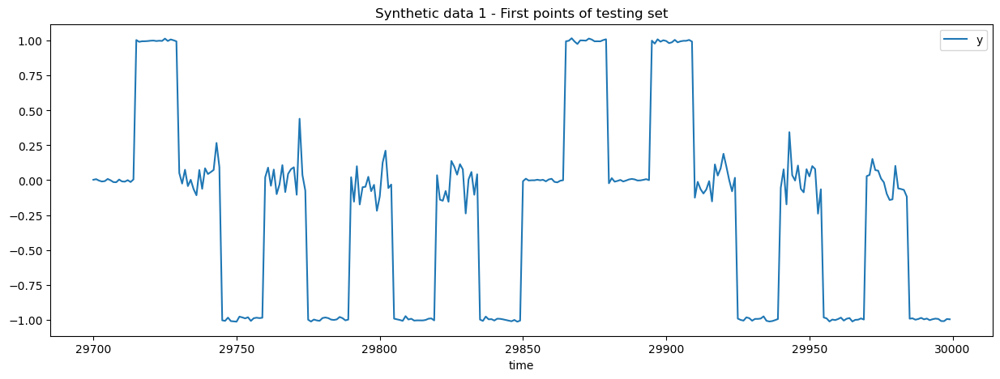

import numpy as np
import matplotlib.pyplot as plt
import pandas as pd
SEGMENT_LENGTH = 30
def generate_synthetic_1(
segment_length=SEGMENT_LENGTH,
n_segments=100,
low_noise_level=0.01,
high_noise_level=0.1,
seed=None,
):
"""Generate synthetic time series data with two types of segments
- segment type "a" has a prefix centered around 0 and a suffix centered
around 1.
- segment type "b" has a prefix centered around 0 with high variance and a
suffix centered around -1.
The variance of the prefix is therefore predictive of the suffix.
The suffix values predictive of the next segment prefix's mean (always 0).
"""
rng = np.random.default_rng(seed)
total_length = segment_length * n_segments
segment_types = rng.choice(["a", "b"], n_segments)
prefix_length = segment_length // 2
suffix_length = segment_length - prefix_length
segments = []
for segment_type in segment_types:
if segment_type == "a":
# Prefix is centered around 0 with low variance
segments.append(
rng.normal(loc=0, scale=low_noise_level, size=prefix_length)
)
# Suffix is centered around 1 with low variance
segments.append(
rng.normal(loc=1, scale=low_noise_level, size=suffix_length)
)
elif segment_type == "b":
# Prefix is also centered around 0 but with high variance
segments.append(
rng.normal(loc=0, scale=high_noise_level, size=prefix_length)
)
# Suffix is centered around -1 with low variance
segments.append(
rng.normal(loc=-1, scale=low_noise_level, size=suffix_length)
)
return pd.DataFrame(
{
"time": np.arange(total_length),
"y": np.concatenate(segments),
"series_id": np.zeros(total_length, dtype=np.int32),
}
)
data = generate_synthetic_1(n_segments=1000, seed=1)
cutoff = -SEGMENT_LENGTH * 10 # 10 segments for testing
data_train = data.iloc[:cutoff]
data_test = data.iloc[cutoff:]
_ = data_train.plot(x="time", y="y", title="Synthetic data 1", figsize=(15, 5))

_ = data_train.iloc[: SEGMENT_LENGTH * 10].plot(
x="time",
y="y",
title="Synthetic data 1 - First points of training set",
figsize=(15, 5),
)
_ = data_test.iloc[: SEGMENT_LENGTH * 10].plot(
x="time",
y="y",
title="Synthetic data 1 - First points of testing set",
figsize=(15, 5),
)


from mlforecast import MLForecast
from sklearn.pipeline import make_pipeline
from sklearn.preprocessing import SplineTransformer, PolynomialFeatures
from sklearn.kernel_approximation import Nystroem
from mlforecast.lag_transforms import (
Combine,
RollingMax,
RollingMin,
RollingMean,
RollingStd,
)
from mlforecast.target_transforms import Differences
from sklearn.linear_model import Ridge
from sklearn.ensemble import RandomForestRegressor, HistGradientBoostingRegressor
from sklearn.feature_selection import SelectKBest
from sklearn.tree import DecisionTreeRegressor
import warnings
warnings.filterwarnings("ignore", category=RuntimeWarning, module="sklearn")
mlf = MLForecast(
models=[
# Ridge(alpha=1e-6),
# make_pipeline(SplineTransformer(), Ridge(alpha=1e-6)),
# make_pipeline(
# SplineTransformer(sparse_output=True, n_knots=10),
# PolynomialFeatures(degree=2, include_bias=False, interaction_only=True),
# # Nystroem(kernel="poly", n_components=200, degree=2, random_state=0),
# SelectKBest(k=100),
# Ridge(alpha=1e-6),
# ),
# RandomForestRegressor(
# n_estimators=100,
# max_features=0.8,
# max_depth=8,
# min_samples_leaf=300,
# n_jobs=4,
# ),
# DecisionTreeRegressor(max_depth=8, min_samples_leaf=300),
HistGradientBoostingRegressor(),
],
freq=1,
lags=range(1, SEGMENT_LENGTH + 1),
lag_transforms={
1: [
RollingMean(SEGMENT_LENGTH // 2),
RollingStd(SEGMENT_LENGTH // 2),
],
SEGMENT_LENGTH
// 2: [
RollingMax(SEGMENT_LENGTH // 2),
RollingMin(SEGMENT_LENGTH // 2),
],
},
# target_transforms=[Differences([1])],
num_threads=4,
)
schema = dict(
time_col="time",
id_col="series_id",
target_col="y",
)
mlf.preprocess(data_train, **schema)
| time | y | series_id | lag1 | lag2 | lag3 | lag4 | lag5 | lag6 | lag7 | ... | lag25 | lag26 | lag27 | lag28 | lag29 | lag30 | rolling_mean_lag1_window_size15 | rolling_std_lag1_window_size15 | rolling_max_lag15_window_size15 | rolling_min_lag15_window_size15 | |
|---|---|---|---|---|---|---|---|---|---|---|---|---|---|---|---|---|---|---|---|---|---|
| 30 | 30 | 0.229240 | 0 | 1.015399 | 0.984054 | 1.005690 | 1.009448 | 0.989327 | 1.007420 | 1.002516 | ... | 0.000281 | 0.002324 | -0.021358 | 0.005610 | -0.003792 | 0.001729 | 0.999949 | 0.010648 | 1.002597 | -0.021358 |
| 31 | 31 | -0.076858 | 0 | 0.229240 | 1.015399 | 0.984054 | 1.005690 | 1.009448 | 0.989327 | 1.007420 | ... | -0.013703 | 0.000281 | 0.002324 | -0.021358 | 0.005610 | -0.003792 | 0.948392 | 0.199231 | 1.002597 | -0.021358 |
| 32 | 32 | 0.005565 | 0 | -0.076858 | 0.229240 | 1.015399 | 0.984054 | 1.005690 | 1.009448 | 0.989327 | ... | 0.021756 | -0.013703 | 0.000281 | 0.002324 | -0.021358 | 0.005610 | 0.877473 | 0.330574 | 1.002597 | -0.021358 |
| 33 | 33 | 0.139742 | 0 | 0.005565 | -0.076858 | 0.229240 | 1.015399 | 0.984054 | 1.005690 | 1.009448 | ... | -0.013874 | 0.021756 | -0.013703 | 0.000281 | 0.002324 | -0.021358 | 0.811585 | 0.397444 | 1.016731 | -0.013874 |
| 34 | 34 | -0.148124 | 0 | 0.139742 | 0.005565 | -0.076858 | 0.229240 | 1.015399 | 0.984054 | 1.005690 | ... | -0.010775 | -0.013874 | 0.021756 | -0.013703 | 0.000281 | 0.002324 | 0.753119 | 0.428409 | 1.016731 | -0.013874 |
| ... | ... | ... | ... | ... | ... | ... | ... | ... | ... | ... | ... | ... | ... | ... | ... | ... | ... | ... | ... | ... | ... |
| 29695 | 29695 | -0.992458 | 0 | -1.007506 | -1.022026 | -0.997978 | -0.987840 | -1.007104 | -0.991782 | -0.992320 | ... | -0.021484 | -0.999256 | -0.997739 | -0.998251 | -0.993025 | -1.027132 | -0.667520 | 0.491195 | 0.136864 | -0.999256 |
| 29696 | 29696 | -0.992652 | 0 | -0.992458 | -1.007506 | -1.022026 | -0.997978 | -0.987840 | -1.007104 | -0.991782 | ... | -0.108987 | -0.021484 | -0.999256 | -0.997739 | -0.998251 | -0.993025 | -0.723321 | 0.476180 | 0.136864 | -0.999256 |
| 29697 | 29697 | -0.998359 | 0 | -0.992652 | -0.992458 | -1.007506 | -1.022026 | -0.997978 | -0.987840 | -1.007104 | ... | 0.136864 | -0.108987 | -0.021484 | -0.999256 | -0.997739 | -0.998251 | -0.792378 | 0.429943 | 0.136864 | -0.999256 |
| 29698 | 29698 | -1.006092 | 0 | -0.998359 | -0.992652 | -0.992458 | -1.007506 | -1.022026 | -0.997978 | -0.987840 | ... | -0.132552 | 0.136864 | -0.108987 | -0.021484 | -0.999256 | -0.997739 | -0.864049 | 0.358369 | 0.154546 | -0.999256 |
| 29699 | 29699 | -1.002482 | 0 | -1.006092 | -0.998359 | -0.992652 | -0.992458 | -1.007506 | -1.022026 | -0.997978 | ... | -0.143894 | -0.132552 | 0.136864 | -0.108987 | -0.021484 | -0.999256 | -0.941425 | 0.222137 | 0.154546 | -0.285990 |
29670 rows × 37 columns
PREDICTION_HORIZON = SEGMENT_LENGTH * 2
# mlf.fit(data_train, max_horizon=PREDICTION_HORIZON, **schema) # direct forecasting
mlf.fit(data_train, **schema) # recursive forecasting
MLForecast(models=[HistGradientBoostingRegressor], freq=1, lag_features=['lag1', 'lag2', 'lag3', 'lag4', 'lag5', 'lag6', 'lag7', 'lag8', 'lag9', 'lag10', 'lag11', 'lag12', 'lag13', 'lag14', 'lag15', 'lag16', 'lag17', 'lag18', 'lag19', 'lag20', 'lag21', 'lag22', 'lag23', 'lag24', 'lag25', 'lag26', 'lag27', 'lag28', 'lag29', 'lag30', 'rolling_mean_lag1_window_size15', 'rolling_std_lag1_window_size15', 'rolling_max_lag15_window_size15', 'rolling_min_lag15_window_size15'], date_features=[], num_threads=4)
test_offset = 0
all_predictions = []
UPDATE_CHUNK_SIZE = 5
while test_offset < len(data_test):
new_predictions = mlf.predict(PREDICTION_HORIZON)
all_predictions.append(new_predictions)
# Update the forecaster with the new observations
mlf.update(data_test.iloc[test_offset : test_offset + UPDATE_CHUNK_SIZE])
test_offset += UPDATE_CHUNK_SIZE
---------------------------------------------------------------------------
KeyboardInterrupt Traceback (most recent call last)
Cell In[7], line 7
4 UPDATE_CHUNK_SIZE = 5
5 while test_offset < len(data_test):
----> 7 new_predictions = mlf.predict(PREDICTION_HORIZON)
8 all_predictions.append(new_predictions)
10 # Update the forecaster with the new observations
File ~/work/forecasting/forecasting/.pixi/envs/doc/lib/python3.12/site-packages/mlforecast/forecast.py:738, in MLForecast.predict(self, h, before_predict_callback, after_predict_callback, new_df, level, X_df, ids)
735 else:
736 ts = self.ts
--> 738 forecasts = ts.predict(
739 models=self.models_,
740 horizon=h,
741 before_predict_callback=before_predict_callback,
742 after_predict_callback=after_predict_callback,
743 X_df=X_df,
744 ids=ids,
745 )
746 if level is not None:
747 if self._cs_df is None:
File ~/work/forecasting/forecasting/.pixi/envs/doc/lib/python3.12/site-packages/mlforecast/core.py:825, in TimeSeries.predict(self, models, horizon, before_predict_callback, after_predict_callback, X_df, ids)
823 X_df = ufp.drop_columns(X_df, drop_cols)
824 if getattr(self, "max_horizon", None) is None:
--> 825 preds = self._predict_recursive(
826 models=models,
827 horizon=horizon,
828 before_predict_callback=before_predict_callback,
829 after_predict_callback=after_predict_callback,
830 X_df=X_df,
831 )
832 else:
833 preds = self._predict_multi(
834 models=models,
835 horizon=horizon,
836 before_predict_callback=before_predict_callback,
837 X_df=X_df,
838 )
File ~/work/forecasting/forecasting/.pixi/envs/doc/lib/python3.12/site-packages/mlforecast/core.py:667, in TimeSeries._predict_recursive(self, models, horizon, before_predict_callback, after_predict_callback, X_df)
665 self._predict_setup()
666 for _ in range(horizon):
--> 667 new_x = self._get_features_for_next_step(X_df)
668 if before_predict_callback is not None:
669 new_x = before_predict_callback(new_x)
File ~/work/forecasting/forecasting/.pixi/envs/doc/lib/python3.12/site-packages/mlforecast/core.py:619, in TimeSeries._get_features_for_next_step(self, X_df)
617 new_x = ufp.horizontal_concat([new_x, X])
618 if isinstance(new_x, pd.DataFrame):
--> 619 nulls = new_x.isnull().any()
620 cols_with_nulls = nulls[nulls].index.tolist()
621 else:
File ~/work/forecasting/forecasting/.pixi/envs/doc/lib/python3.12/site-packages/pandas/core/frame.py:6506, in DataFrame.isnull(self)
6501 @doc(NDFrame.isna, klass=_shared_doc_kwargs["klass"])
6502 def isnull(self) -> DataFrame:
6503 """
6504 DataFrame.isnull is an alias for DataFrame.isna.
6505 """
-> 6506 return self.isna()
File ~/work/forecasting/forecasting/.pixi/envs/doc/lib/python3.12/site-packages/pandas/core/frame.py:6497, in DataFrame.isna(self)
6495 @doc(NDFrame.isna, klass=_shared_doc_kwargs["klass"])
6496 def isna(self) -> DataFrame:
-> 6497 res_mgr = self._mgr.isna(func=isna)
6498 result = self._constructor_from_mgr(res_mgr, axes=res_mgr.axes)
6499 return result.__finalize__(self, method="isna")
File ~/work/forecasting/forecasting/.pixi/envs/doc/lib/python3.12/site-packages/pandas/core/internals/base.py:178, in DataManager.isna(self, func)
176 @final
177 def isna(self, func) -> Self:
--> 178 return self.apply("apply", func=func)
File ~/work/forecasting/forecasting/.pixi/envs/doc/lib/python3.12/site-packages/pandas/core/internals/managers.py:363, in BaseBlockManager.apply(self, f, align_keys, **kwargs)
361 applied = b.apply(f, **kwargs)
362 else:
--> 363 applied = getattr(b, f)(**kwargs)
364 result_blocks = extend_blocks(applied, result_blocks)
366 out = type(self).from_blocks(result_blocks, self.axes)
File ~/work/forecasting/forecasting/.pixi/envs/doc/lib/python3.12/site-packages/pandas/core/internals/blocks.py:395, in Block.apply(self, func, **kwargs)
389 @final
390 def apply(self, func, **kwargs) -> list[Block]:
391 """
392 apply the function to my values; return a block if we are not
393 one
394 """
--> 395 result = func(self.values, **kwargs)
397 result = maybe_coerce_values(result)
398 return self._split_op_result(result)
File ~/work/forecasting/forecasting/.pixi/envs/doc/lib/python3.12/site-packages/pandas/core/dtypes/missing.py:178, in isna(obj)
101 def isna(obj: object) -> bool | npt.NDArray[np.bool_] | NDFrame:
102 """
103 Detect missing values for an array-like object.
104
(...) 176 Name: 1, dtype: bool
177 """
--> 178 return _isna(obj)
File ~/work/forecasting/forecasting/.pixi/envs/doc/lib/python3.12/site-packages/pandas/core/dtypes/missing.py:184, in _isna(obj, inf_as_na)
178 return _isna(obj)
181 isnull = isna
--> 184 def _isna(obj, inf_as_na: bool = False):
185 """
186 Detect missing values, treating None, NaN or NA as null. Infinite
187 values will also be treated as null if inf_as_na is True.
(...) 198 boolean ndarray or boolean
199 """
200 if is_scalar(obj):
KeyboardInterrupt:
nrows = 12
fig, axes = plt.subplots(nrows=nrows, figsize=(15, 5 * nrows))
for row_idx, predictions in enumerate(all_predictions):
merged_data = data_test.copy()
merged_data = merged_data.merge(predictions, on=["time", "series_id"], how="left")
merged_data.drop(["series_id"], axis=1).iloc[: SEGMENT_LENGTH * 3].plot(
x="time", ax=axes[row_idx]
)
axes[row_idx].set_ylim(-1.2, 1.2)
if row_idx >= nrows - 1:
break